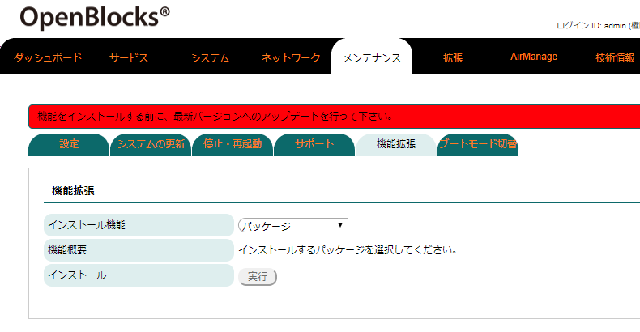
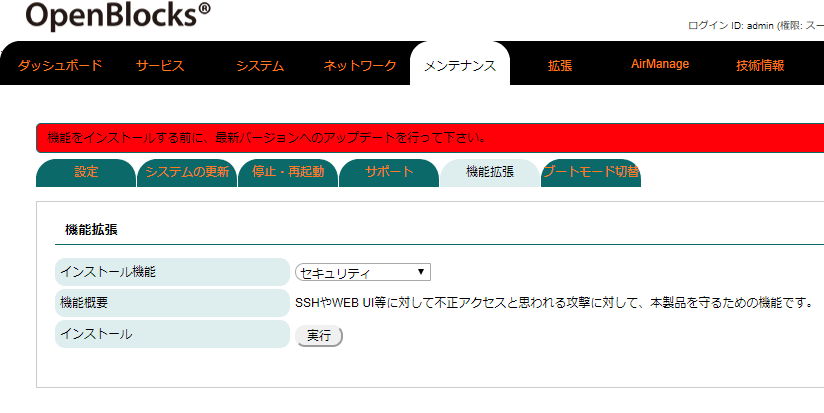
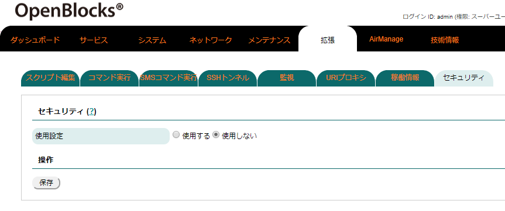
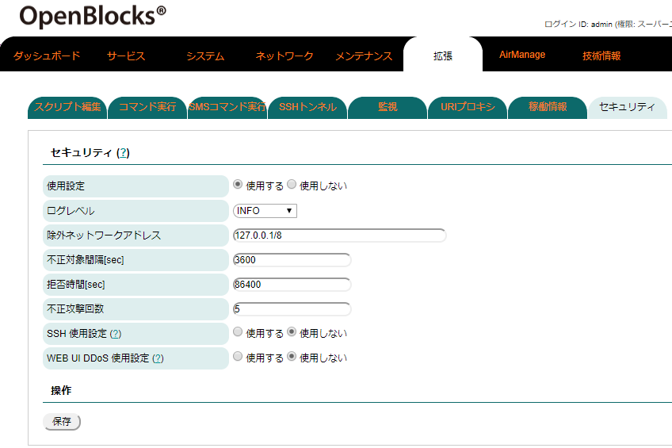
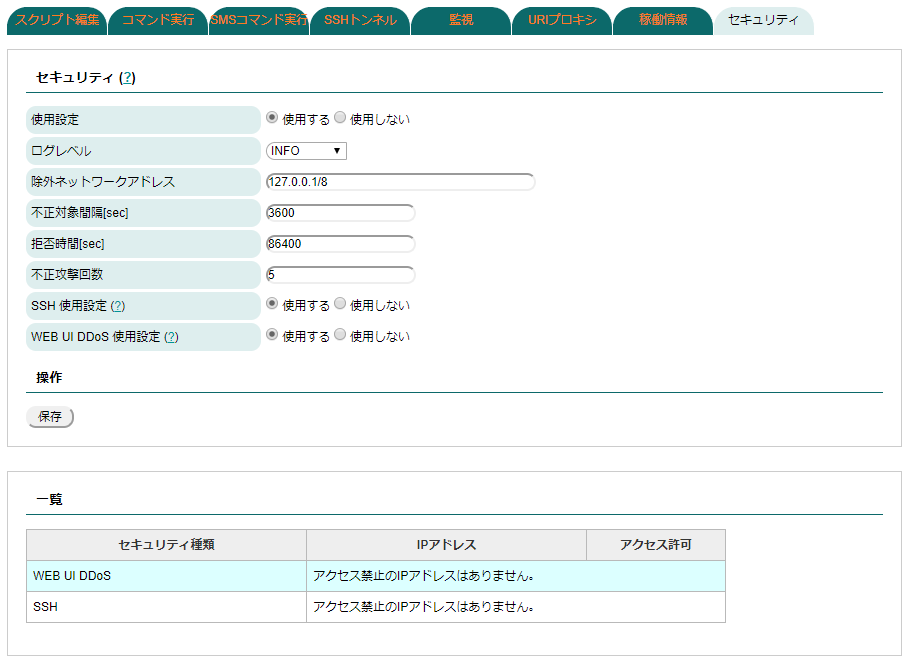
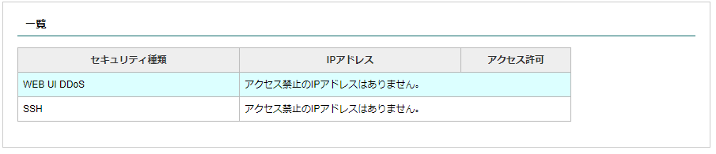
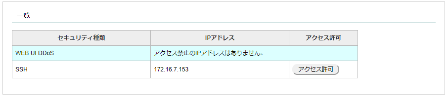

セキュリティ設定¶
セキュリティ機能のインストール¶
本製品出荷時では、セキュリティ設定WEB UIはインストールされておりません。そのため、WEB UIの「メンテナンス」→「機能拡張」タブからセキュリティ設定用WEB UIのインストールを行います。

WEB UIの「メンテナンス」タブを選び、さらに「機能拡張」タブをクリックすると機能拡張用のパッケージを選択することができます。

WEB UIの「メンテナンス」タブを選び、さらに「機能拡張」タブをクリックすると機能拡張用のパッケージを選択することができます。
インストール機能のリストから「セキュリティ」を選択します。
その後、インストールの「実行」ボタンを押し、インストールを行ってください。
尚、インストール完了後には反映を行うため、本体再起動が必要となります。そのため、「メンテナンス」→「停止・再起動」から本製品の再起動を行ってください。
セキュリティ使用設定について¶
セキュリティ機能のインストールが完了している場合、サービスWEB UIの「拡張」→「セキュリティ」タブにセキュリティの設定項目が表示されます。
使用設定を「使用する」に設定し、適用するセキュリティ使用を「使用する」にし保存することで対象のセキュリティ機能が適用されます。
尚、本機能は起点の初回不正攻撃から、一定時間の間に指定不正攻撃回数(初回含む)分の不正攻撃があった場合、対象IPアドレスの対象サービスへのアクセスを拒否します。
 |
 |
 |
セキュリティ |
|
|---|---|
項目 |
備考 |
使用設定 |
セキュリティ機能の使用設定を行います。セキュリティ機能を使用する場合には、「使用する」を 選択してください。 |
ログレベル |
出力するログレベルを以下から選択します。 ・INFO ・CRITICAL ・ERROR ・WARNING ・NOTICE ・DEBUG 尚、基本的には「INFO」から変更す必要はありません。 |
除外ネットワークアドレス |
セキュリティ機能から除外するネットワークアドレスを指定します。尚、複数指定する場合には、 空白にて追加してください。 Ex.) 192.168.254.0のネットワークを追加する場合 "127.0.0.1/8 192.168.254.0/24" |
不正対象間隔[sec] |
対象IPアドレスから対象サービスへの不正攻撃が開始された際に、同様の不正攻撃としてグループ 化する時間を指定します。 |
拒否時間[sec] |
対象IPアドレスから対象サービスへのアクセスを拒否する時間を指定します。 |
不正攻撃回数 |
不正対象間隔内に不正攻撃が一定回数来た場合、アクセス拒否と判定する際の回数を指定します。 |
SSH使用設定 |
SSHのログイン失敗及びDDoS攻撃によるセキュリティ機能の使用設定を行います。 使用する場合には、「使用する」を選択して下さい。 |
WEB UI DDoS使用設定 |
WEB UI使用ポートでのHTTP/HTTPSアクセスにおける、403/404アクセス攻撃によるセキュリティ機能 の使用設定を行います。 使用する場合には、「使用する」を選択して下さい。 |
各使用設定を「使用する」に保存した場合、セキュリティ機能が有効となります。
不正攻撃のアクセス拒否解除¶
セキュリティ機能を有効とした場合、「拡張」→「セキュリティ」タブのページ下部に有効となっているセキュリティ一覧が表示されます。
また、アクセス拒否となっているIPアドレス/対象サービスの組み合わせが表示されます。
アクセス拒否が存在しない場合 |
SSHにアクセス拒否が存在する場合 |
|---|---|
 |
 |
不正攻撃等が無く、正常に稼働している場合には左図のようにアクセス拒否となっているIPアドレスは表示されません。
不正攻撃が行われ、アクセス拒否となっているIPアドレスが存在する場合、左図のようにIPアドレス及び「アクセス許可」ボタンが表示されます。
尚、「アクセス許可」ボタンは対象IPアドレスから対象サービスへの再アクセスを許容するようにします。問題のないユーザーがログイン失敗等による再アクセスを行わせたい場合にご使用ください。